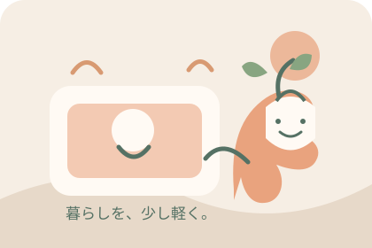
毎日の「どうしよう」に、小さな道しるべ。
ひとりで抱えず、
暮らしを整える。
妊娠・出産の準備から、赤ちゃんとの毎日、入園入学、家事、お母さん自身のケアまで。今の年齢と状況に合うヒントを、ひとつずつ。
困りごとから探す ↓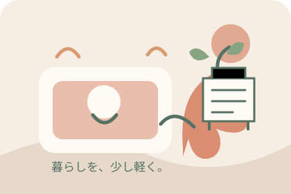
まずはここから
年齢や、今の状況を選ぶ
ぴったりの答えがない日も、気になる言葉からどうぞ。
ガイドを表示しています
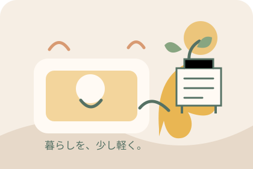
0〜1歳赤ちゃんとの暮らし
0〜1歳：安全な居場所と、気楽に続くお世話の仕組み
赤ちゃんの成長は一人ひとり違います。道具選びでは対象月齢・使い方・置き場所を確認し、家の中の小さな危険を減らします。
ガイドを読む →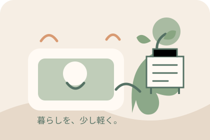
1〜3歳イヤイヤ・生活習慣
1〜3歳：毎日の「自分でやる」を支える小さな工夫
着替え、食事、片づけなど、やりたい気持ちと大人の予定がぶつかる時期。選べる範囲を小さくすると、毎日のやりとりが整理しやすくなります。
ガイドを読む →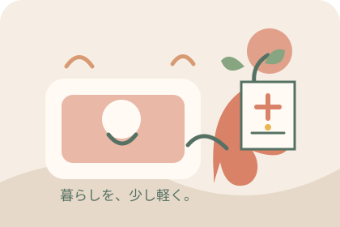
家族みんな子どもの体調不良
子どもの体調が気になるとき：受診・相談に備えるメモ
急な発熱や体調の変化に慌てたら、まず様子を短く記録し、相談先を確認します。このページは診断や受診判断をするものではありません。
ガイドを読む →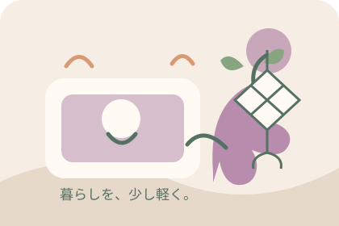
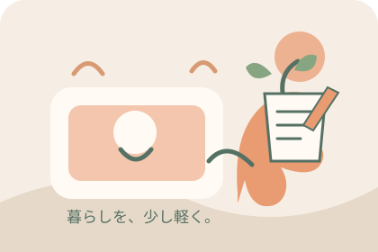
小学生入学・新学期
小学校入学前：上履きは「指定・サイズ・記名」を確認
上履きや袋の形、色、記名位置は学校によって異なることがあります。説明会資料を確認してから選べば、買い直しを防ぎやすくなります。
ガイドを読む →
小・中・高校生学習・進路
学生の子を持つ保護者へ：進学準備を一緒に整理
進学準備は、情報集め・予定づくり・費用確認を分けると見通しが立ちます。子どもの希望を聞き、公式情報を一緒に確認するところから始めましょう。
ガイドを読む →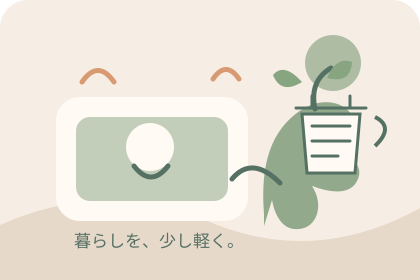
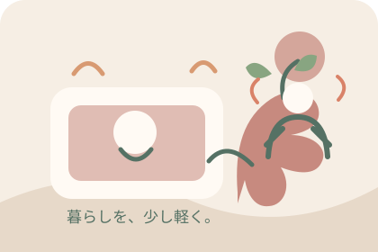
お母さん自身肩こり・休息
肩や首がつらい日に：まず「同じ姿勢」を区切る
家事やスマートフォン、デスクワークで同じ姿勢が続くと、肩や首に負担を感じることがあります。できる範囲で姿勢を変え、短く休む工夫を取り入れましょう。
ガイドを読む →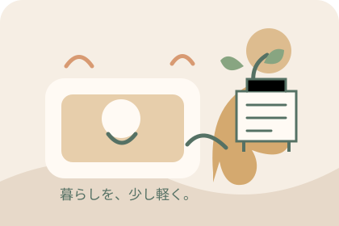
家族みんな家事の時短
家事を回すコツ：『名もなき家事』を見える形にする
家事の負担は、作業だけでなく気づく・考える・補充することにもあります。分担を話し合うときは、作業の名前を具体的にしてみましょう。
ガイドを読む →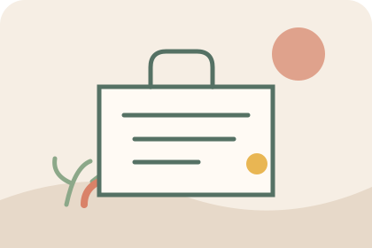
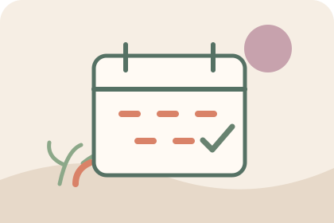
妊娠中・出産前産後サポート
産後の暮らし：助けを「お願いリスト」にしておく
産後に必要な支援は家庭ごとに異なります。家事を細かい作業に分けて、誰に・いつ・どこまで頼めるかを出産前に相談しておくと、頼みごとを伝えやすくなります。
ガイドを読む →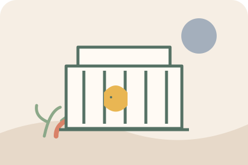
0〜1歳安全なねんね
赤ちゃんの寝床づくり：寝具と周りの物を確認
寝床は見た目のかわいさだけでなく、製品の説明書と公的な安全情報を確認して整えます。毎日の寝かせ方を家族で共有できる形にしましょう。
ガイドを読む →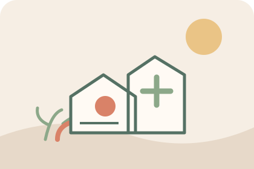
0〜1歳玩具の安全
赤ちゃんのおもちゃ：対象年齢と安全表示を見る
玩具を選ぶときは、対象年齢・使用上の注意・部品の状態を確認します。きょうだいの玩具を共有する場合は、小さな部品が乳幼児の手に届かない置き方も考えましょう。
ガイドを読む →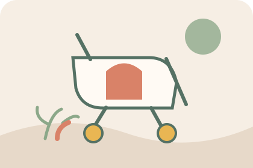
0〜1歳赤ちゃんとのおでかけ
赤ちゃんとのお出かけ：バッグを「交換セット」にする
外出先で必要な物は、時間・天候・移動手段で変わります。普段のバッグに全部を詰めるより、外出ごとに補充する小さなセットを作ると忘れ物を見つけやすくなります。
ガイドを読む →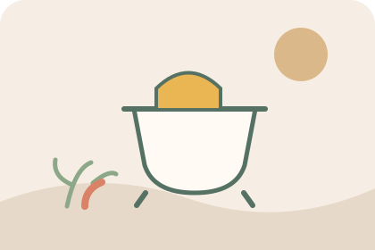
1〜3歳トイレ習慣
トイレ習慣：急がず、行きやすい環境をつくる
トイレに慣れるペースは子どもによって違います。時間を競うより、行きたいときに大人へ伝えやすく、服を扱いやすい環境を整えましょう。
ガイドを読む →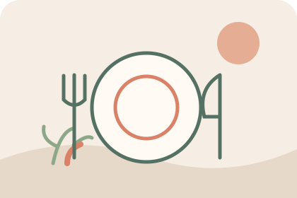
1〜3歳食事・片づけ
幼児の食事：片づけやすさと見守りを両立
食事の支度と片づけを簡単にするには、使う道具を絞り、座る場所と片づけ先を固定する方法があります。食べるときは、発達や食材に合わせた安全確認も欠かせません。
ガイドを読む →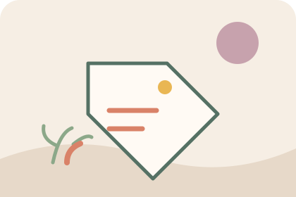
3〜6歳・園児名前付け
入園グッズの名前付け：園の指定を一枚にまとめる
名前を書く場所や方法、必要な用品は園ごとに違います。案内を受け取ったら、買い足す前に「品名・名前の場所・記名方法」を整理しましょう。
ガイドを読む →
3〜6歳・園児園生活
園との連絡：朝の共有事項を短く整える
登園時の伝達事項が多い日は、要点を短く並べておくと伝え漏れを防ぎやすくなります。園の連絡帳やアプリに記入する内容は、施設のルールに沿って共有します。
ガイドを読む →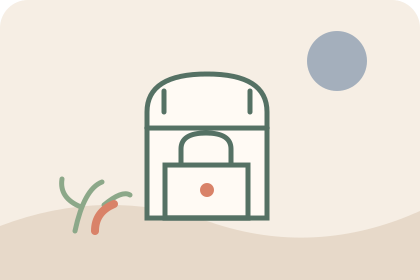
小学生帰宅後の仕組み
小学生の帰宅後：ランドセルの定位置をつくる
帰宅後の荷物が床に広がると、翌朝に必要な物を探しやすくなります。学校の持ち物を置く場所と、確認する順番をシンプルに決めましょう。
ガイドを読む →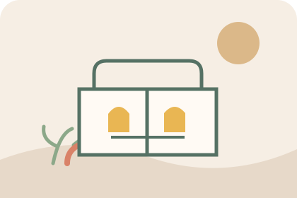
小学生お弁当
子どものお弁当：冷ます・分ける・早めに食べる
お弁当の安全は、容器だけでなく調理・詰め方・持ち運びの流れで整えます。学校の保管場所や食物アレルギーのルールも事前に確認しましょう。
ガイドを読む →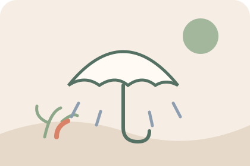
小学生雨の日の通学
雨の日の通学：濡れ対策と見えやすさを準備
雨の日は、傘・レインウェア・靴だけでなく、視界と荷物の安全も確認します。通学路や学校のルールに合う装備を、実際の登校前に一緒に点検しましょう。
ガイドを読む →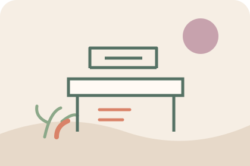
小・中・高校生家庭学習
家庭学習の場所：机の上を「今日使う物」に絞る
立派な学習机を買う前に、家で落ち着いて取り組める場所と、教科ごとの道具の置き方を試してみます。本人が片づけを続けやすい仕組みが目安です。
ガイドを読む →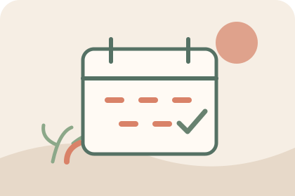
小・中・高校生スケジュール管理
進学準備の予定：締切を家族で見える化する
受験や進学の準備では、本人の学習予定と保護者が行う手続きが混ざりがちです。期限・担当・確認先を一枚に分けると、抜け漏れを見つけやすくなります。
ガイドを読む →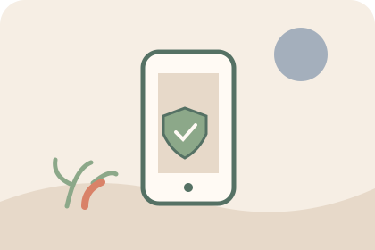
小・中・高校生スマホ・ネット
子どものスマホ：家族で使い方のルールを作る
スマートフォンの約束は、禁止事項だけでなく困ったときの相談先や安全設定も含めて話し合います。年齢や使い方の変化に合わせて見直せる形にしましょう。
ガイドを読む →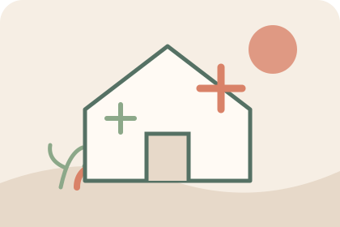
家族みんな防災・備蓄
家族の防災備蓄：いつもの物を少し多めに回す
防災用品は家族構成や住む地域で変わります。非常持ち出し品と自宅で使う備蓄を分け、普段使う食品・日用品を期限順に回す方法から始めましょう。
ガイドを読む →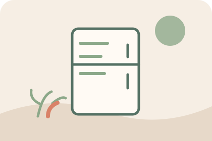
家族みんな冷蔵・冷凍保存
冷蔵庫の整理：先に食べる物が見える配置に
冷蔵庫の整理は、見た目をそろえるより、食品を表示どおりに保存して早めに使い切れる配置が大切です。詰め込みすぎを避け、家族も分かる場所に期限を記録しましょう。
ガイドを読む →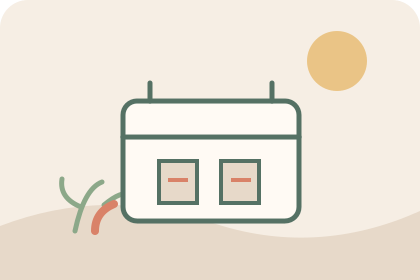
家族みんな作り置き
作り置きの冷凍：小分け・日付・早めに食べ切る
忙しい日の食事を助ける作り置きは、冷ます時間や保存容器の扱いまで決めておくと管理しやすくなります。食品の種類ごとの保存方法・期間は表示や公的情報を確認しましょう。
ガイドを読む →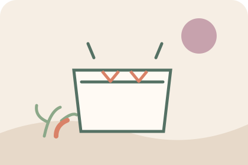
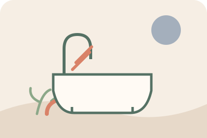
家族みんな浴室掃除
浴室掃除：道具を絞り、洗剤の表示を守る
浴室の掃除道具は、使う場所の近くにまとめると取りかかりやすくなります。洗剤は用途・注意表示を確かめ、子どもの手が届かない位置へ戻しましょう。
ガイドを読む →今日からできる、小さな工夫
暮らしを少し軽くする3つのコツ
全部を一度にやらない
今困っていることを一つだけ選んで、今日できる小さな手順に分けます。
使う場所に、使う物を
家の中の動線に合わせて道具の定位置をつくると、探す時間が減ります。
家族に渡せる形にする
手順や持ち物を見えるところに書いておくと、「お願い」を具体的にしやすくなります。
学齢期のご家庭へ
進学や受験の準備を、もう少し詳しく。
進学対策ガイドでは、中学・高校・大学受験や、英検・漢検などの学習準備をテーマ別にまとめています。お子さんの目標に合わせて、学校や試験の公式情報を確認する入り口としてご利用ください。
進学対策ガイドを見る ↗このサイトについて
「お母さんの教科書」は、暮らしのヒント集です
子どもの成長や家庭の事情に、ひとつだけの正解はありません。各ガイドは一般的な情報と実践のヒントをまとめたもので、医療・育児・学校の個別相談に代わるものではありません。安全や健康に関わる内容は、公的機関の情報を出典として記載しています。学校や園のルール、商品の対象年齢・使い方は最新の案内を必ず確認してください。
広告・アフィリエイトについて
Amazonの商品検索リンクを掲載しています。リンクから購入があった場合、運営者に紹介料が支払われることがあります。各リンクは検索結果を開くもので、個別商品の使用・評価を示すものではありません。Amazonのアソシエイトとして、お母さんの教科書は適格販売により収入を得ています。